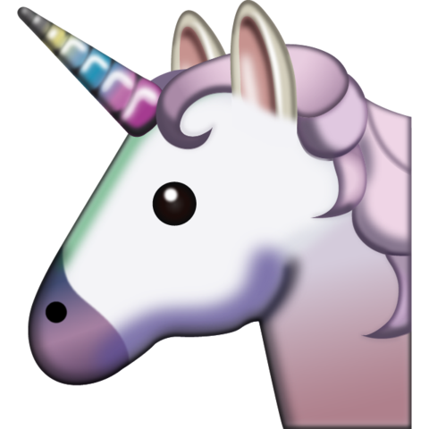

Happy Birthday Nei'
Hoy hace 19 años nació Neidy Vanessa Calderón Gómez quien hoy en día es mi novia y es la persona a la cual más amo en este
mundo, tuve la suerte de conocerla un diciembre, el 17 de diciembre del 2015 para ser más exactos
y desde ese entonces he tenido el gustazo de estar con ella en dos de sus cumpleaños, siendo este
el segundo.
Por eso el día de hoy quiero desearle un muy pero muy feliz cumpleaños, mucha suerte, bendiciones
y éxitos para su vida, que la pase súper bien en su día porque se merece lo mejor. También quiero
que sepa que siempre estaré a su lado para todo lo que necesite y para apoyarla en todo lo que se
le ocurra, que a pesar de todas las cosas que han pasado en estos casi 14 MESES la amo muchísimo
y ojalá todas las cosas que queremos y hemos planeado se nos cumplan algún día.

FELIZ CUMPLEAÑOS NEI'
Birthday #1 - 06/07/2016
El primer cumpleaños en el que la acompañe fue en julio del 2016 para ese tiempo cumplía 18 años de edad e íbamos a cumplir ya dos meses de ser novios y aunque ese día no pude acompañarla por mucho tiempo y me arrepiento de eso, me siento muy afortunado de haber podido compartir un poco ese día, ya no siendo tan solo muy buenos amigos sino como algo más allá y al día de hoy la acompaño una vez más en esta fecha tan importante.
Birthday #2 - 06/07/2017
Nei' una vez más Feliz Cumpleaños, para mí es un placer muy grande el poder compartir contigo y acompañarte el día de hoy una vez más como hace un año, solo que esta vez ya hemos madurado un poco más como personas y mucho más como la pareja que somos, gracias por dejarme estar a tu lado, por aguantarme, por todo y solo cuídate mucho y pásala muy bien, te extraño un montón y espero poder verte muy pronto Nei’, bendiciones y muchos éxitos. 